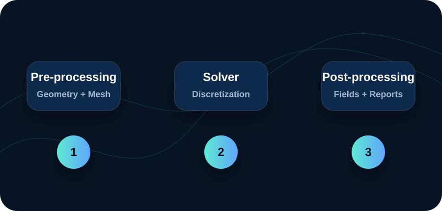
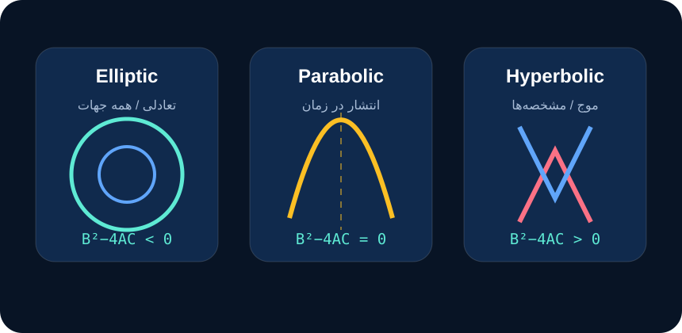
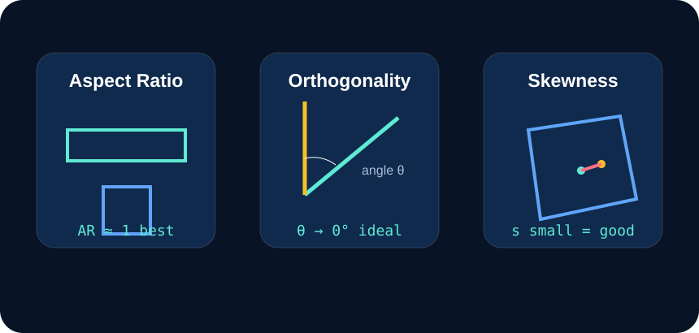
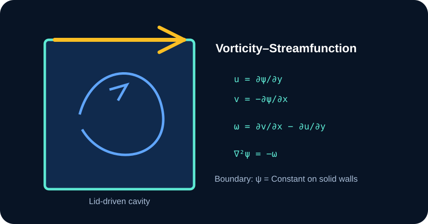

1) فیزیک
قوانین بقای جرم، مومنتوم و انرژی پایهی مدلسازی هستند. بدون فهم فیزیک، رنگهای کانتور فقط تصویرند.
این صفحه یک مینیکورس جذاب و وبسایتی برای ورود به دنیای Computational Fluid Dynamics است؛ مناسب برای ارائه در GitHub، رزومه پژوهشی، پورتفولیو و مرور سریع مفاهیم پایه. محتوا بر اساس جزوههای CFD و با بیان آموزشی و قابلفهم بازنویسی شده است.

CFD یعنی تبدیل فیزیک جریان سیال به معادلات، تبدیل معادلات به معادلات جبری، و حل آنها با کامپیوتر.
قوانین بقای جرم، مومنتوم و انرژی پایهی مدلسازی هستند. بدون فهم فیزیک، رنگهای کانتور فقط تصویرند.
دامنه به سلول تقسیم میشود؛ مشتقها و شارها به روابط جبری تبدیل میشوند؛ سپس حلگر سیستم را حل میکند.
جواب CFD فقط وقتی قابل اعتماد است که همگرا، مستقل از شبکه و قابل مقایسه با دادهی تحلیلی/تجربی باشد.
هر ماژول را بخوان، تمرینش را انجام بده و بعد تیک «انجام شد» را بزن تا پیشرفتت ذخیره شود.
از مسئله فیزیکی تا گزارش مهندسی: Geometry → Mesh → Solver → Post-processing.
در CFD اول باید بدانیم «چه چیزی را میخواهیم پیشبینی کنیم؟» سرعت، فشار، دما، نیروی درگ، افت فشار یا الگوی گردابه؟ بعد یک مدل فیزیکی انتخاب میکنیم: جریان پایا یا ناپایا، تراکمپذیر یا تراکمناپذیر، آرام یا آشفته، انتقال حرارت یا ایزوترمال.
نکته طلایی: CFD یک ماشین تولید کانتور نیست؛ یک فرآیند مهندسی است. هر رنگی که در Post-processing میبینی، پشتش فرضیات، شرایط مرزی، مش، مدل آشفتگی و معیار همگرایی قرار دارد.
Elliptic، Parabolic و Hyperbolic را با مفهوم انتشار اطلاعات یاد بگیر.
معادلات CFD معمولاً از نوع PDE هستند؛ چون مجهولها مثل سرعت و فشار تابع مکان و زماناند. معادلهی کلی مرتبه دوم را میتوان با ضرایب A، B و C طبقهبندی کرد. علامت B² − 4AC تعیین میکند اطلاعات چگونه در میدان پخش میشود.
معادله لاپلاس/پواسون بیضوی است و به شرایط مرزی دور تا دور دامنه نیاز دارد. معادله گرما سهموی است و با شرط اولیه در زمان جلو میرود. معادله موج هذلولوی است و مفهوم مشخصهها در آن مهم میشود.

بسط تیلور، مشتق پیشرو/پسرو/مرکزی و خطای گسستهسازی.
در روش تفاضل محدود، تابع پیوسته را فقط روی نقاط شبکه میشناسیم. مشتقها با اختلاف مقدار تابع در نقاط مجاور تقریب زده میشوند. تفاضل مرکزی معمولاً دقت بیشتری از پیشرو/پسرو دارد، چون خطای مرتبه اول در بسط تیلور حذف میشود.
برای مشتق دوم، فرمول مرکزی سهنقطهای از پایهایترین روابط CFD است و در معادلات پخش، لاپلاس و پواسون زیاد دیده میشود.
تابع f(x)=x³+3x²−9x را در x=1 با h=0.2 مشتق بگیر و خطای Forward، Backward و Central را مقایسه کن.
زبان اصلی Fluent و OpenFOAM: شار ورودی/خروجی روی حجم کنترل.
در FVM بهجای نگاه نقطهای، یک سلول یا Control Volume داریم. قانون بقا روی هر حجم کنترل انتگرال گرفته میشود و با قضیه گاوس، انتگرال حجمی دیورژانس به شار سطحی روی وجوه سلول تبدیل میشود. به همین دلیل FVM ذاتاً conservative است.
اگر شار خروجی از یک سلول دقیقاً شار ورودی سلول مجاور باشد، جرم/مومنتوم/انرژی در سطح شبکه حفظ میشود. همین ویژگی برای CFD صنعتی بسیار مهم است.
در سایت میتوان برای هر سلول فلشهای شار ورودی/خروجی گذاشت و با hover نشان داد کدام وجه، کدام شار را حمل میکند.
Aspect Ratio، Skewness، Orthogonality و اثرشان روی همگرایی.
مش خوب یعنی سلولها آنقدر منظم و کافی باشند که گرادیانهای جریان را ببینند، بدون اینکه حلگر را ناپایدار کنند. سلول بد مثل یک سنسور خراب است: داده میدهد، ولی اعتمادپذیر نیست.

FTCS، Laasonen، Crank–Nicolson و شرط پایداری.
در روش صریح، مقدار زمان جدید از مقادیر زمان قبلی بهطور مستقیم محاسبه میشود؛ سریع و ساده است اما به شرط پایداری حساس است. در روش ضمنی، مجهولات زمان جدید با هم حل میشوند؛ هزینه بیشتر دارد ولی معمولاً پایدارتر است.
Crank–Nicolson از میانگین زمانی بین n و n+1 استفاده میکند و برای معادلات پخش، دقت زمانی خوبی دارد.
اگر Δt خیلی بزرگ شود، حلگر در زمان «پرش» میکند و اطلاعات عددی فرصت انتشار درست در شبکه را پیدا نمیکند؛ نتیجه میتواند نوسان یا واگرایی باشد.
سه ستون اعتماد عددی: Consistency + Stability ⇒ Convergence.
یک روش عددی وقتی همساز است که با کوچکشدن Δx و Δt، معادله گسسته به معادله اصلی نزدیک شود. وقتی پایدار است که خطاهای کوچک در زمان رشد نکنند. وقتی همگرا است که جواب عددی با ریزکردن شبکه به جواب واقعی نزدیک شود.
در تحلیل Von Neumann، خطا به موجهای فوریه شکسته میشود و بررسی میکنیم آیا دامنه هر موج با زمان رشد میکند یا نه.
Residual پایین به تنهایی کافی نیست. باید مانیتورهای فیزیکی، بالانس جرم و استقلال از شبکه هم بررسی شود.
ورودی، خروجی، دیواره، تقارن و شرط اولیه.
شرایط مرزی تعیین میکنند سیال چگونه وارد، خارج یا با دیواره تعامل کند. انتخاب اشتباه BC میتواند جواب را کاملاً غیرواقعی کند، حتی اگر مش و حلگر خوب باشند.
در هر مرز بپرس: «در دنیای واقعی اینجا چه چیزی معلوم است؟ سرعت؟ فشار؟ شار حرارتی؟ یا تقارن؟»
انتخاب مدل آشفتگی یعنی توازن بین هزینه و دقت.
| مدل | هزینه | دقت | کاربرد معمول | نکته wall treatment |
|---|---|---|---|---|
| RANS | کم | میانگین جریان | طراحی مهندسی، HVAC، پمپ، لوله | با wall function معمولاً y+ بزرگتر |
| URANS | متوسط | نوسانهای بزرگ مقیاس | vortex shedding، جریان ضربانی | مشابه RANS |
| LES | زیاد | گردابههای بزرگ حل میشوند | جت، wake، mixing، aeroacoustics | نیازمند مش دیواره دقیقتر |
| DNS | بسیار زیاد | بدون مدل توربولانس | تحقیق بنیادی در Re پایین | همه مقیاسها باید حل شوند |
Vorticity–Streamfunction برای جریان دوبعدی تراکمناپذیر.
برای جریان دوبعدی تراکمناپذیر میتوان به جای حل مستقیم فشار، از تابع جریان ψ و تاوایی ω استفاده کرد. تابع جریان شرط پیوستگی را خودکار برقرار میکند و تاوایی چرخش محلی جریان را نشان میدهد.
این فرم برای مسئلهی کلاسیک lid-driven cavity بسیار آموزشی است: دیواره بالایی حرکت میکند، گردابه اصلی تشکیل میشود و حلگر باید معادله پواسون ψ را در هر گام حل کند.

این مسیر برای کسی طراحی شده که میخواهد از مفاهیم پایه به Fluent/OpenFOAM و پروژه پژوهشی برسد.
بعد از خواندن ماژولها، این 8 سؤال را جواب بده. نتیجه در مرورگر ذخیره نمیشود مگر پیشرفت ماژولها.
برای نسخه GitHub میتوان اینها را در README هم نگه داشت.